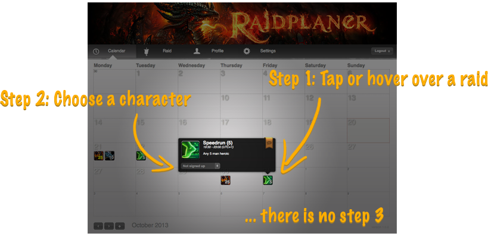
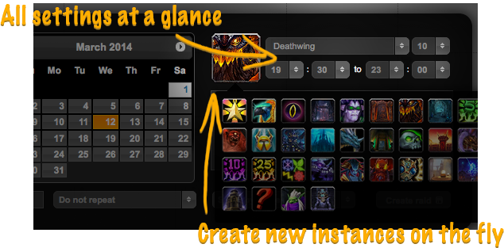
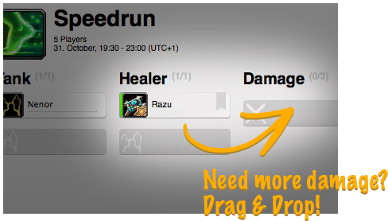
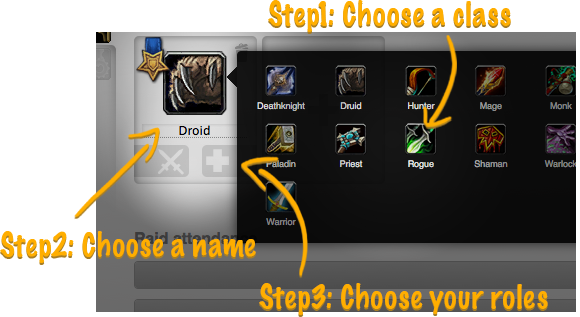
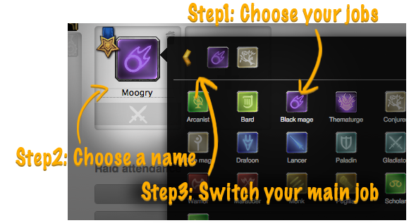

Manage your raids: fast, easy and elegant�
Raid management does not need to be complicated.

Integrated
Already have a forum or CMS? Choose from a variety of forum and CMS bindings.
Customizable
Not happy with the predefined settings? Customize the Raidplaner to your needs.
Themeable
Use one of the bundled themes or create your own theme to wave your guild's banner.
Supported forums and content management systems
Spend your time raiding, not managing

Create raids in seconds
Creating raids is often tedious work. Or is it?
Double click on the date of your raid and choose a raid instance.
Your raid starts at the usual time with the usual amount of players? You're done already.
Want to try out the new raid instance from the latest patch? Create it right in place.
You need 10 more of this every week? Choose, set, done.

Managing raids is easy
Deciding which players to set up is crucial for a successful raid.
Don't waste your time on clumsy interfaces that reload on every click.
Managing your raid has never been more convenient.
Double click a player to switch between raiding and waiting.
Need that healer to do damage? Drag and drop him to another role.
Need this player to play with an alt? Click the player, choose the alt and click again.


Keeping it simple
Ever wondered why you still have to enter things like race, level or resistances for your characters?
Those were important once, but are now obsolete. Raid prerequisites are well known and there are in-game plugins managing gear and stats.
The Raidplaner focuses just on the things that matter: Who you are and what you play.
What's new in version 1.1.0
You can view the full changelog on GitHub.
-
Batch create raids
Need to create 10 raids in a row? You can now choose how often and at which interval a raid shall be cloned.
-
Vacations
Users can now set a vacation period where they are automatically marked as absent. And if they want to always attend the latest raids - there's now an option for this, too.
-
Improved bindings
Your users are already logged in to your forum and you don't want them to log in a second time? Automatic login to the rescue.
You want to create a new post in your forum to discuss upcoming raids? Activate forum posts for your binding and you're done.
-
Final Fantasy 14 support
Let's face it. The Final Fantasy job system is not the WoW class system. So there is now an all new character management mode just for Final Fantasy users.
And for all those WoW players - don't worry. Nothing changes for you.
-
Enhanced theme support
There are multiple new options for creating themes. Want to choose between random banners? Want to re-skin the entire Raidplaner? These are just two of the things possible with 1.1.0.
-
Improved game support
Games are now configured in separate XMLs that can be switched with a simple flip in the settings.
-
API
Want to display the next 10 upcoming raids on your guild's homepage? Meet the new Raidplaner API.
Call functions directly from PHP or trigger an asynchronous query via javascript.
-
And there is even more ...
Version 1.1.0 contains over 25 new features and improvements over version 1.0.3.
Have a look at the changelog for a complete list of all changes.
Packedpixel Raidplaner requires PHP 5.3.4 or better with PDO (MySQL) support as well as a MySQL 5.x or better database.
Supported browsers are Firefox 4+, Google Chrome, Internet Explorer 10+, Opera 12+ and Safari 4+.